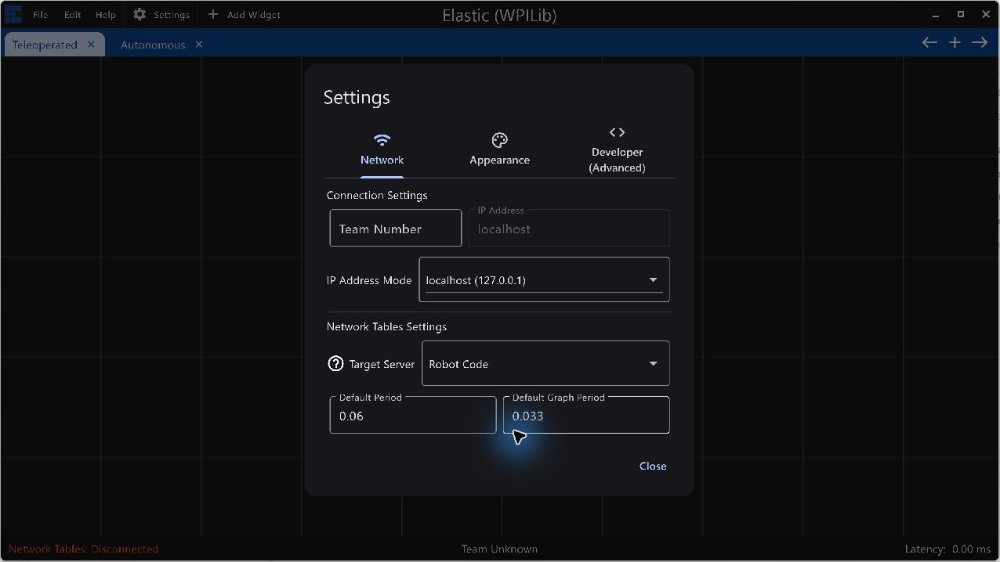
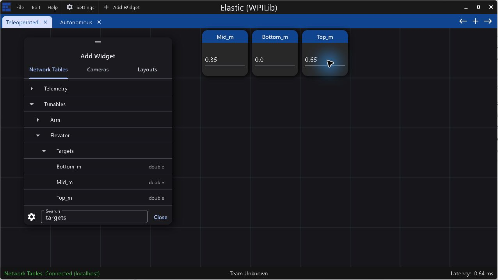

Try your new targets in Elastic
Start the simulator and open Elastic
- Save your code with Ctrl + S. In VS Code press Ctrl + Shift + P and run WPILib: Simulate Robot Code. Select Sim GUI and start it.
- Leave the simulated robot Disabled while setting up the dashboard.
- Open the command palette again. Run WPILib: Start Tool and choose Elastic.
- In Elastic click Settings → Network. For the simulator on this laptop, set IP Address Mode to localhost (127.0.0.1) and Target Server: Robot Code. Close Settings.
- Look at Elastic’s bottom-left corner. It should say Network Tables: Connected. If it does not, check that the simulator is still running.

Add your editable numbers
Click Add Widget. In the NetworkTables tree, expand Tunables → your mechanism → Targets. Drag a target onto the empty dashboard.
Add Bottom_m, Mid_m, and Top_m. Keep their heights in ascending order.
Add Low_deg and High_deg. Keep LOW below HIGH.
Each number appears as an editable Text Display. Click the number, select its old value, type the new value, then press Enter.

Change one destination
- Change Mid_m to
0.25. - In Sim GUI, assign your Xbox controller to Joystick[1]. Select Teleoperated and enable.
- Use A to select BOTTOM, then press Y once. Watch the elevator go to about 0.25 m.
- Change Mid_m to
0.35. It should not move just because you edited the number. Press A, then Y to use the new height.
- Change High_deg to
40. - In Sim GUI, assign your Xbox controller to Joystick[1]. Select Teleoperated and enable.
- Press B. Watch the arm go to about 40°.
- Edit High_deg to
65. The arm should stay at its old target until you press B again.
Watch and save
In AdvantageScope, connect to the simulator as in the earlier walkthroughs. Add a Line Graph and drag Telemetry → your mechanism → Target_m and Actual_m (or Target_deg and Actual_deg) onto it.
Use Elastic’s File → Save As to save your dashboard layout. Dashboard edits do not rewrite Java. To make a target your new starting value, update its preset in Constants.java, save, and commit in GitHub Desktop.
Keep MIN/MAX limits unchanged. Those describe the mechanism’s travel, not the two or three positions you want to visit.